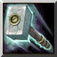

島津家17代當主，貴久的次男。粉碎伊東、大友兩家，讓島津家邁向繁榮的家中猛將。於朝鮮派兵時大破明朝大軍，譽為「鬼石曼子」。 力量型近戰英雄
法術 ：D 輔助 ：B 最擅長一對多人 敏捷：22+2.10 智慧：18+2.00
Ｗ[主動] 鐵布衫
啟動鐵布衫： 增加[10/20/30/40]點攻擊力、[4/6/8/10]點防禦力、[200/300/400/500]點額外生 命，並且獲得魔法免疫。
持續13秒。
消耗法力[110/130/150/170]，等待時間[32]秒。 對附近400範圍的敵人造成[90/180/270/360]傷害並減緩[20/30/40/50]%移動速度及攻擊速度。 持續4秒。 消 耗法力[100/120/140/160]，等待時間18秒。 攻擊時31%額外增加[100/180/260/340]點傷害並震昏[0.4]秒。且不會失誤。 
Ｔ[主動] 不動戰槌 釋放不動戰鎚，每0.5秒造成附近範圍400內的敵人[70/110]點傷害並且擊暈[0.4/0.5]秒。 持續7秒。
消 耗法力[250/300]，等待時間140秒。 |
|